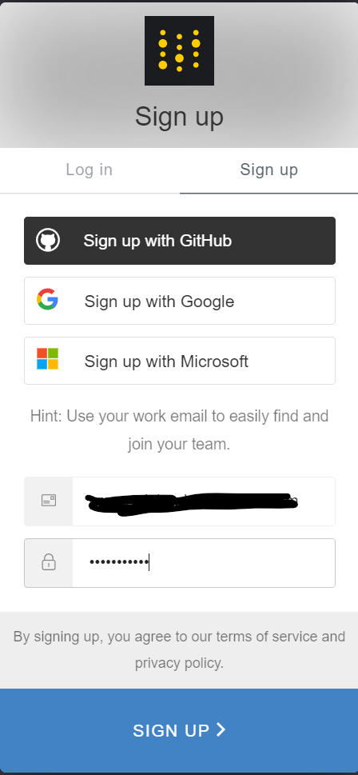
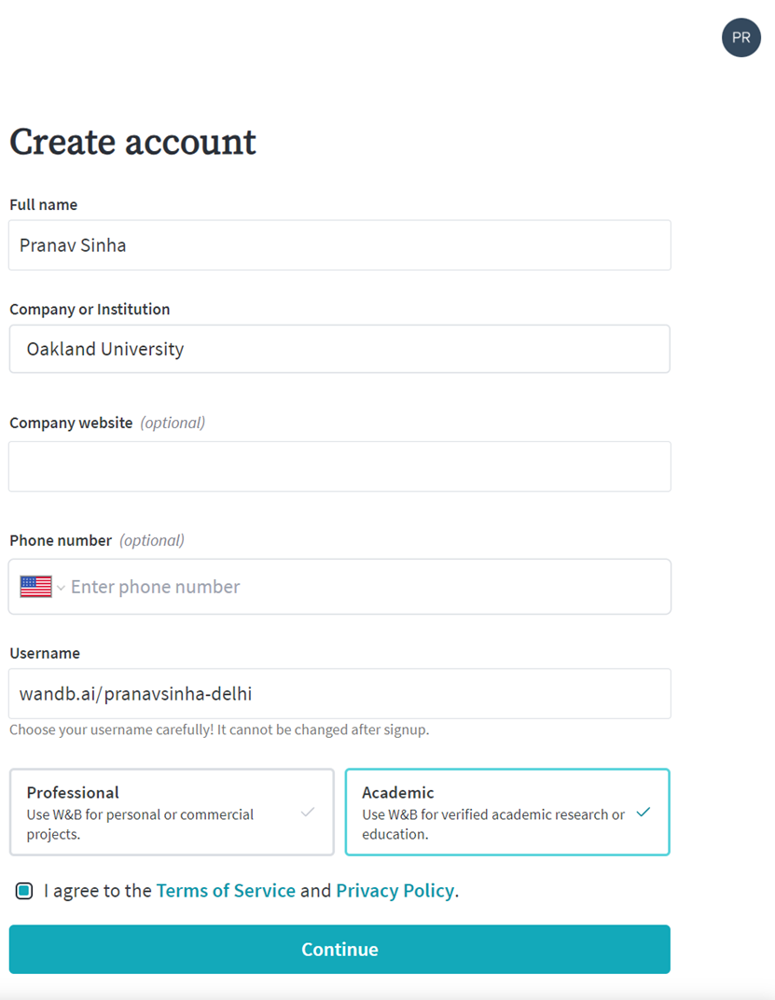
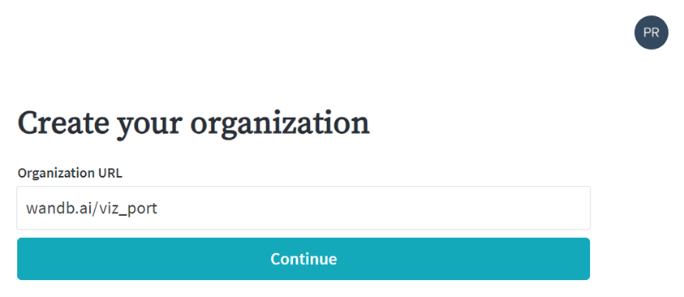
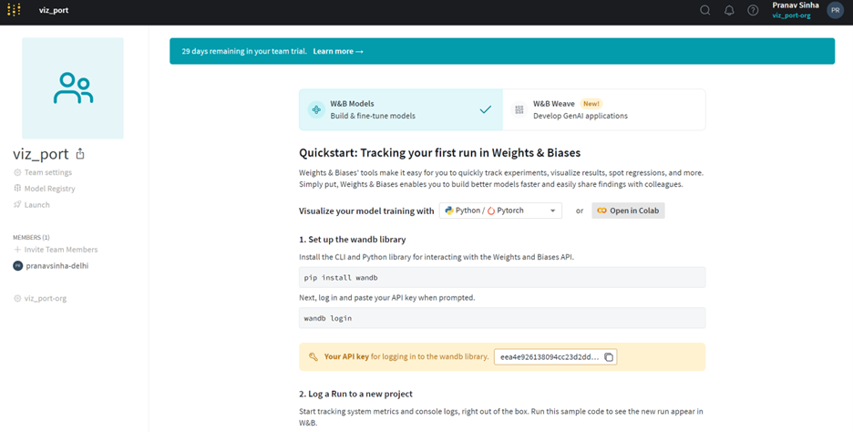
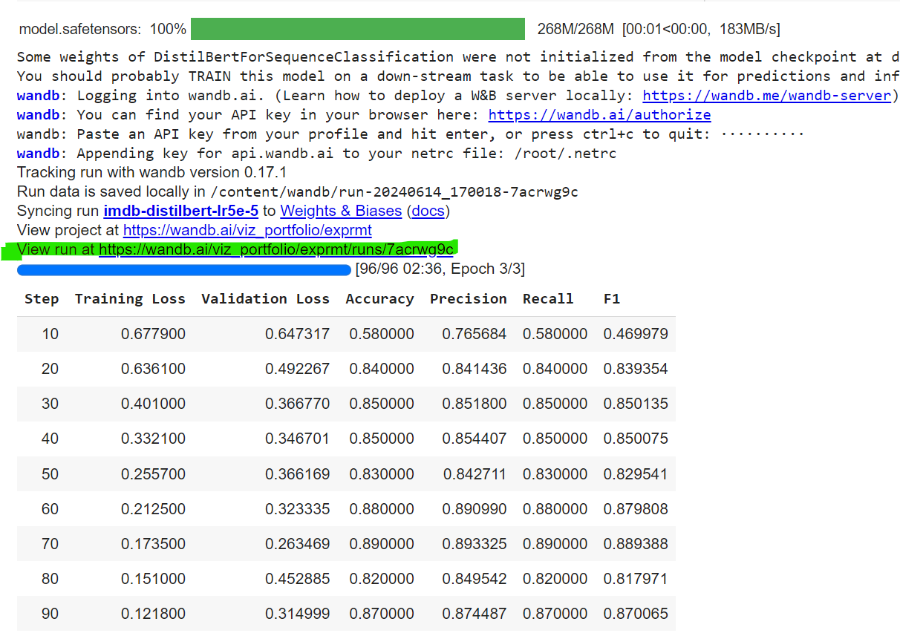

Portfolio 5
A step-by-step guide for Weights & Biases (WANDB) integration with HuggingFace 🤗
This guide will walk you through the steps of creating interactive plots using WANDB for you HuggingFace 🤗 model. This tutorial assumes that you already have an account created in WANDB. If not sign up here, and create a token. Following are the steps to set up an accound in WANDB.
Setting up you WANDB account
Follow these steps to login and get your API token:
Step 1: First navigate to login page and hit sign up
Step 2: After verifying your email, enter these details
Step 3: Now create an organization
Step 4: Finally you can copy the API key. Keep it safe! We will need it later.
WIth a WANDM account in place let's move on to Google Colab
Coding in Google Colab
Follow these steps to integrate your WANDB account in Colab and have an LLM running using HuggingFace 🤗. Make sure your runtime is set to T4 GPU.
Step 1: Install and Import Weights & Biases
Since you are using Google Colab, you can use a cell to run the pip install command directly:
!pip install wandbAfter installation, you can import wandb in the next cell of your Colab notebook:
import wandbStep 2: Configure Environment Variables for Weights & Biases
WANDB_PROJECT and WANDB_LOG_MODEL are the environment variable. These variables will specify the default project name where your experiments will be logged and enables automatic logging of your models to wandb.
import os
os.environ["WANDB_PROJECT"] = "exprmt"
os.environ["WANDB_LOG_MODEL"] = "true"Step 3: Install datasets and accelerate
Run the following command to install the datasets and accelerate library
!pip install datasets
!pip install accelerate>=0.21.0Step 4: Load the IMDB dataset
In this step, you will load the IMDB dataset, which is a collection of movie reviews commonly used for sentiment analysis tasks.
from datasets import load_dataset
datasets = load_dataset("imdb")Step 5: Create a small dataset
In this step, you will create smaller subsets of the IMDB dataset for training and evaluation. This can be useful for quicker experimentation and debugging. We will randomly select 1,000 samples from the training set and 100 samples from the test set.
small_train_dataset = datasets['train'].shuffle(seed=42).select(range(1000))
small_eval_dataset = datasets['test'].shuffle(seed=42).select(range(100))Step 6: Load the DistilBert tokenizer and data collator for tokenizing
In this step, you will load the DistilBert tokenizer, which is designed to convert text into numerical data that can be processed by the DistilBert model. Additionally, you will set up a data collator to handle padding during the tokenization process. This ensures that all input sequences are of equal length, which is important for efficient processing by the model.
from transformers import DistilBertTokenizer, DataCollatorWithPadding
tokenizer = DistilBertTokenizer.from_pretrained('distilbert-base-uncased')
def tokenize_function(examples):
return tokenizer(examples['text'], padding='max_length', truncation=True)
tokenized_train = small_train_dataset.map(tokenize_function, batched=True)
tokenized_eval = small_eval_dataset.map(tokenize_function, batched=True)
data_collator = DataCollatorWithPadding(tokenizer=tokenizer)Step 7: Create metrics
In this step, you will define a function to compute evaluation metrics for the model. Using common metrics like accuracy, precision, recall, and F1 score, you can effectively assess the performance of your model. The `compute_metrics` function will take the model predictions and ground truth labels as input, calculate these metrics, and return them in a dictionary format.
from sklearn.metrics import precision_recall_fscore_support, accuracy_score
def compute_metrics(pred):
labels = pred.label_ids
preds = pred.predictions.argmax(-1)
precision, recall, f1, _ = precision_recall_fscore_support(labels, preds, average='weighted')
acc = accuracy_score(labels, preds)
return {
'accuracy': acc,
'precision': precision,
'recall': recall,
'f1': f1,
}Step 8: Load the model and the trainer
In this step, you will load the DistilBert model, specifically tailored for sequence classification tasks, and set up the training configurations. The `Trainer` class from the Hugging Face `transformers` library will be used to handle the training loop, evaluation, and logging. You will specify various training arguments such as batch size, number of epochs, and learning rate. Finally, the `Trainer` is defined with the model, datasets, data collator, and metrics, and then the model training is initiated.
Additionally, you will integrate Weights & Biases (wandb) for experiment tracking and visualization. By setting `report_to='wandb'` and providing a `run_name`, you enable automatic logging of metrics, model checkpoints, and other relevant information to your wandb dashboard, allowing you to monitor and analyze your training process in real-time.
from transformers import DistilBertForSequenceClassification, Trainer, TrainingArguments
model = DistilBertForSequenceClassification.from_pretrained('distilbert-base-uncased', num_labels=2)
experiment_name = "imdb-distilbert-lr5e-5"
training_args = TrainingArguments(
output_dir="imdb-distilbert/",
eval_strategy='steps',
# get very fine-grained metrics (only needed for things in compute_metrics)
# doing this so often is very slow and not recommended in practice
# often would only do 1 eval per epoch
eval_steps=10,
per_device_train_batch_size=32,
per_device_eval_batch_size=8,
num_train_epochs=3,
weight_decay=0.01,
# match this to wherever tensorboard is looking
logging_dir=f'logs/{experiment_name}/',
# get very fine-grained loggging
logging_steps=10,
report_to='wandb',
run_name=experiment_name,
learning_rate=5e-5
)
# Define the Trainer
trainer = Trainer(
model=model,
args=training_args,
train_dataset=tokenized_train,
eval_dataset=tokenized_eval,
data_collator=data_collator,
compute_metrics=compute_metrics,
)
# Train the model
trainer.train()Once the `train` function is triggered, the process will prompt you to enter the API key for Weights & Biases (wandb). Ensure you have generated this API key beforehand from your wandb account. Paste the API key into the prompt when asked.
After the training completes, you will see a prompt asking you to view your run as shown in the below image (highlighted in green). This link directs you to the wandb dashboard where your visualizations and logged metrics are available. Click the link to access detailed insights and visualizations of your model's performance and training process.
Once you have viewed and verified all the details on the run page, you can proceed to create a report. Here's an example of what a report might look like: